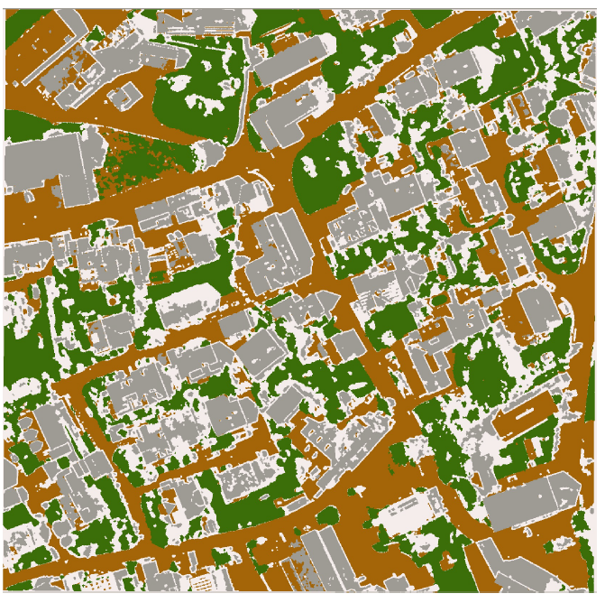
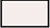
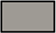
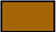

Feature Extraction and Image Segmentation
Feature extraction and image segmentation are methods that transform raw pixel data into meaningful information. I am learning for my interview.
About the map
This map was produced from a high-resolution RGB orthophoto of Ottenhofen, Munich. Roads, vegetation, and populated areas were classified using a combination of feature extraction and segmentation methods like spectral, texture, and edge-based image features.

Legend

Background
Built-up areas
Roads- Vegetation
Excellence Points
-
The page has a semantic structure. Elements such as
<main>,<section>,<figure>, and<figcaption>are used to improve document structure and readability.
- There is a Navigation section at the footer that contains all the links to the pages. It is for easy access so that users do not have to scroll up to the navbar all the time.